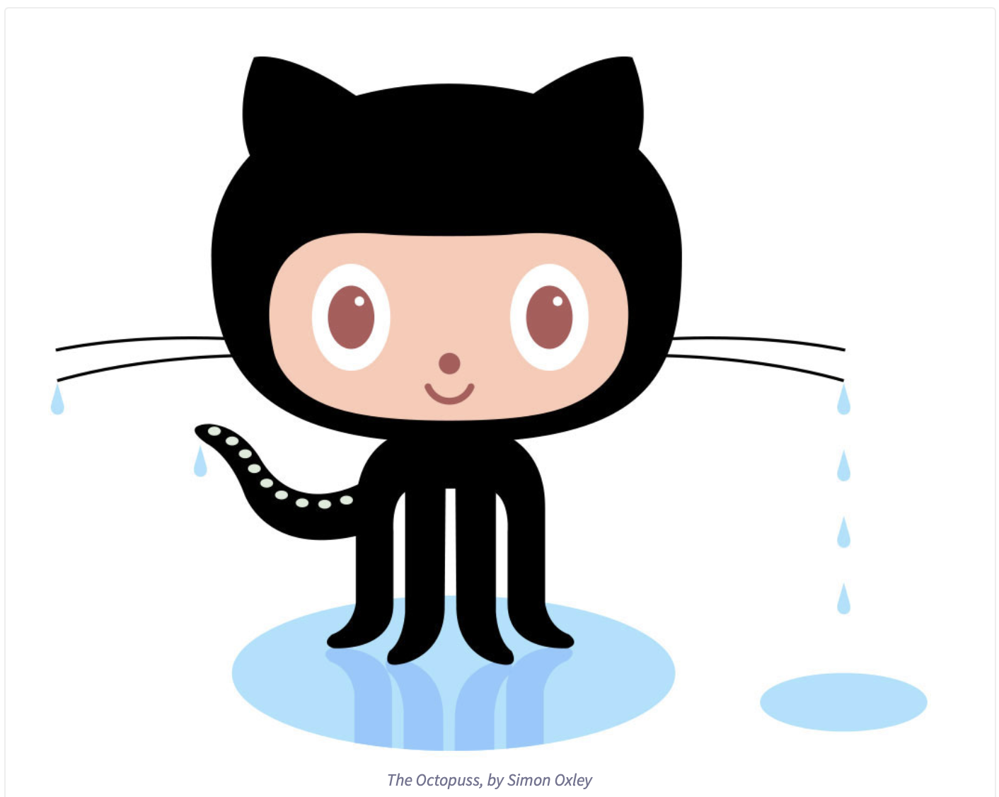

| Home | PVCC | W3 Schools | Contact Us |
All About GitHubQ. What is a version control system?A. A kind of software that helps developers manage and track changes to software code. Q. What is Git?A. A free and open source distributed version control system Q. What is GitHub?A. A code hosting platform for version control and collaboration. Q. What is the difference between Git and GitHub?A. GitHub is used to host and manage Git repositories. Q. Who started GitHub and how was it started?A. Chris Wanstrath, P. J. Hyett, Tom Preston-Werner, and Scott Chacon started GitHub in 2008 using Ruby on Rails. Q. What company owns it now?A. Microsoft. Q. How much does a GitHub account cost?A. Q. What is the Octocat?A. Octocat is the GitHub mascot. It is a mix between a cat and an octopus, and has five legs/tenticles. | |||
Git/GitHub terms:Repository- Essentially a project folder used to contain all the project files. commit- An individual change to a file. fork- A personal copy of another user's repository. push- To send committed changes to a remote repository on GitHub.com pull reques- Proposed changes to a repository submitted by a user. workflows- A configurable automated process that will run one or more jobs. issues- Suggested improvements, tasks or questions. raw button- View or copy the content of a file without any styling. blame button- Describes the last modification to each line of a file. | |||
|  | |||